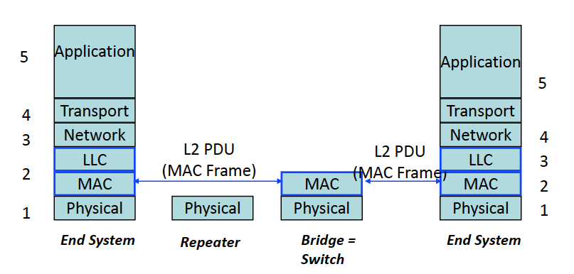

TCP/IP Networking
The MAC Layer
- Book : Sections 2.6, 3.16, 4.12
- slides :
mac.pdf
1. MAC as Shared Medium : The Ethernet Myth and the WiFi Reality
MAC was invented because originally networks shared a cable so need to decode the messages when they are talking together. Solutions : Joint decoding or mutual exclusion protocol.
MAC is derived from the Aloha protocol, and is now implemented as CSMA/CA or CD, RMAC, etc
Aloha

Figure 7 : Transmission procedure for ALOHA at remote
One channel from remote to centre, and a separate channel from center to remotes. In case of collision (if the ACK doesn't arrive) the source retransmits. Collisions are only on the upstream link. Max utilisation : 18%. The waiting time is random because if there is a collision between two remotes and they both try again immediately there can be a deadlock. Stateless protocol !
CSMA
Carrier Sense Multiple Access

Same as ALOHA but the stations must listen before transmitting : in this case there is no base station, it is a transitive channel.
CSMA / CD
CSMA with Collision Detection

If collision is detected, there is a jamming period (32 bits, so that both hosts are certain to have detected the collision). Then both wait a random time (slot_time is an upper bound on the propagation time), which increases exponentially with the number of attempts and try again. ACK are not necessary anymore since the absence of collision means that the transmission went through.
Figure 8 : CSMA / CD Time Diagram
Note : Collisions are detected when the arriving signal power is higher than the original signal + noise level.
There needs to be a minimum frame size to reliably detect the collision, since if the packet size is short compared to the round trip propagation time A can be done transmitting by the time B has detected the collision. (for CSMA/CD the minimum frame size is 64 bytes).
Since the bandwith delay is fixed, the length of an ethernet cable should decrease if the bitrate increases.
Ethernet with CSMA/CD is half-duplex meaning you cannot transmit at the same time. It is not used so much. Wi-Fi uses CSMA but the medium is not necessarily transitive. The solution is that hosts send a short packet called RTS (ready to send) to notify that it wants to talk on the channel. This info is relayed to all hosts by the provider, emulating a transitive medium. Every packet is also ACKed.
2. MAC on cabled systems: the world of switches
Today Ethernet LANs use switches (bridges) : this is a queuing system on different wires so that the links are full-duplex (there is no MAC protocol, no CSMA/CD, …) and packets can flow in both directions simultaneously.
Figure 9 : Ethernet switch
All packets are copied into the bridge's buffer and inspected. A forwarding table with exact match is used to route the packet. If the destination interface is the same as the origin the packet is dropped.
The table is built by learning : at first they are empty. When a packet arrives with destination B, the bridge sends the packet to everyone until someone ACKs or someone talks to B so it knows where B is. This is broken if there are loops (often used in networks for redundancy, alternative paths for routing).
To solve the loop problems, we used the Spanning Tree Protocol. It decides to deactivate some ports such that the remaining topology is a tree not loops. This does not break the advantages of loops since the STP is adaptive.
When the algorithm has run it labels the interfaces :
- root : one per bridge = shortest path to root port
- designated : one per LAN = bridge that has the smallest distance to root
- blocking : the rest
Note that STP is not the most efficient routing (you need Shortest Path Bridging if you want this property).
3. Format and addresses

Figure 10 : The Ethernet v.2 frame
The MAC layer provides bit error detection by providing a 32 bits Cyclic Redundancy Checksum (CRC). If a packet is false it is dropped.
From the viewpoint of the end system it is the same to be on a bridged internet (where only the destination sees the frame) or a shared access internet (where all systems see the frame and discard it except for the destination).

Figure 11 : SMA vs Bridged
MAC addresses are 48 bit‐long. The 1st address bit is the individual/group bit, used to differentiate normal addresses from group addresses. The second bit indicates whether the address is globally administered (the normal case, burnt‐in) or locally administered. Group addresses are always locally administered.
ff:ff:ff:ff:ff:ff is a broadcast address : on a shared medium LAN all machines receive the packet and do not discard it. With bridges, the broadcast is forwarded through the spanning tree (so no risk of looping, especially since there is no TTL/HL in an Ethernet packet).
For IPv6, it is not broadcast but rather a mutlicast address. In IPv4 there are 24 bits to differentiate, in IPv6 there are 32 bits.
4. Virtual LANs
Some systems use LAN as access control : the goal is to decouple who belongs to which LAN from physical location. VLANs are handled by a smart switch which configures which of its ports belongs to which VLAN. There is a VLAN label added to the Ethernet header on links between switches.
5. Architecture Aspects
- Repeater = layer 1 intermediate systems
- Bridge = layer 2 intermediate systems
- Routers = layer 3 intermediate systems

6. Security aspects
MAC addresses are sent in the clear ! This is vulnerable to :
- eavesdropping
- Free riding Inserting a device into a network without authorisation
- Impersonation Sending data with someone else's MAC address
Solutions (MACSEC)
Access Control Requiring users to show credentials before allowing a given MAC on the network
- e.g WPA with a shared secret or a personal secret
Authentication Every MAC frame is signed and numbered
- prevents free riding
- prevents impersonation
Encryption MAC frame payload is encrypted (but not MAC address), prevents eavesdropping
Differences between bridges and routers :
- Bridges don't have structured tables (they must search the entire table for every packet). Prohibitive for large networks, where we prefer routers
- Bridges are independent of whether IPv4 or IPv6 are used.